Great Marlin is a private charter: one 36-foot sportfisher working the drop off Herradura Bay, one crew, one group at a time. I built the site the way the big yacht builders present their boats, calm and confident, with the boat as the star. It shows the water, answers the questions, and takes the booking on its own.
Most charter websites look the same: a stock marlin, a price table and a contact form. A private charter with one boat has nothing to hide behind, so the boat had to carry the whole site. I studied how the world's top yacht builders show their boats, then built the opposite of a template: quiet, confident, and focused on what you'll actually step onto.
From every side, before a guest reads a word. The opening screen is the boat turning slowly on the water.
Where it fishes, how close the sailfish are, and what the sea is doing right now.
What's included, what bites when, how to get to the beach, what a first offshore day is like.
Four questions, the price for the whole group on screen, several days in one request.
Nothing shouts. Wide, engineered capitals for headlines, a typewriter font for the coordinates and live readouts, and the boat's own teal as the only color. Square buttons, straight lines, lots of space. It reads like a yacht spec sheet, not a tour flyer.
A wide, engineered headline font with the feel of a hull name, a clean font for reading, and a typewriter font for every number: coordinates, sea height, water temperature.
The dark of the hull, the teal of the boat's own paint, and warm deck tones for the light sections. One accent color, used sparingly.
Real coordinates in the corner, a live seas and water readout on the first screen, and small mono labels everywhere. The kind of details people feel even if they never notice them.
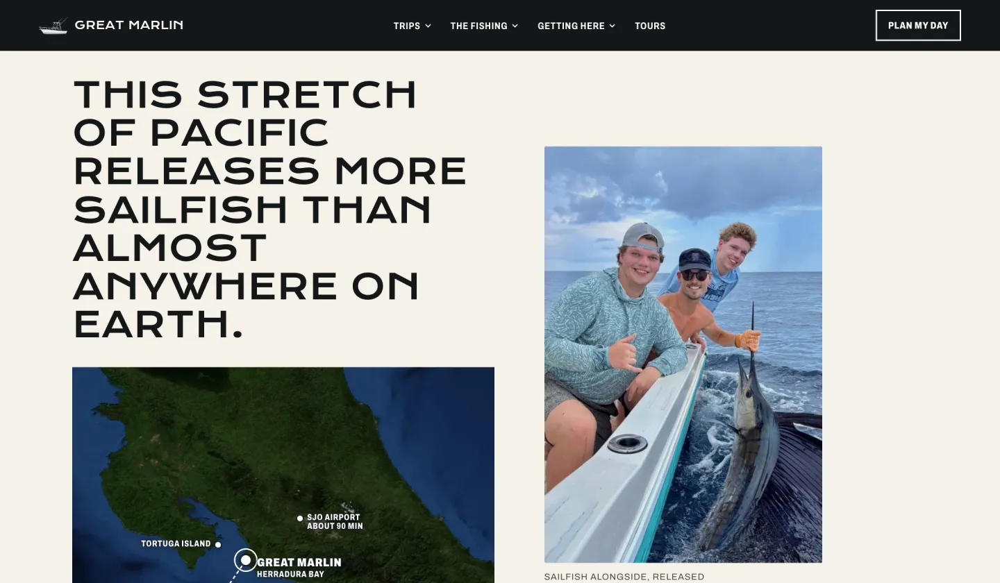
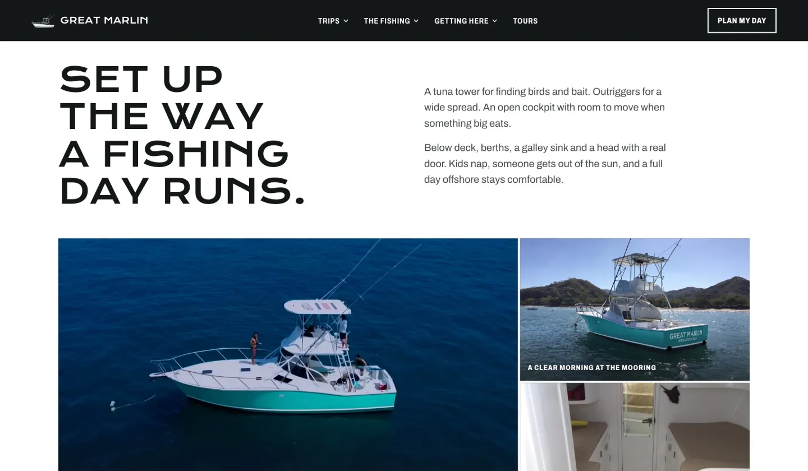
A homepage that walks from the boat to the booking, plus pages for every trip and every question a first-time guest has.
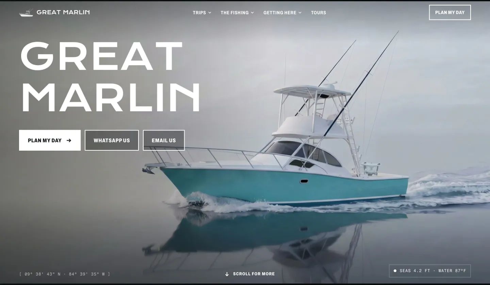
The boat turns a full 360° on its own as the page opens. The name and three buttons stay put: plan my day, WhatsApp, email. In the corners, the real coordinates and today's seas and water temperature.
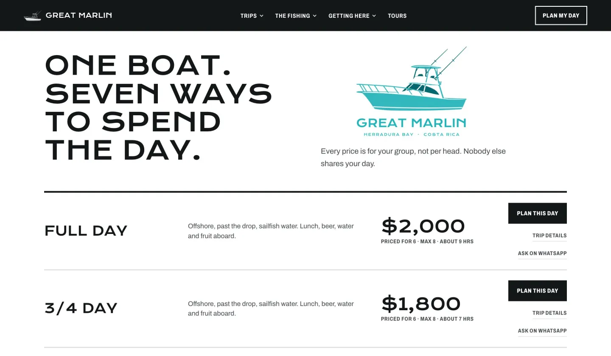
Offshore full and three-quarter days, an inshore half day, a surf day by boat, and more. Every price is for the whole group, not per head, with a plan button and a WhatsApp shortcut on every line, the question already written.
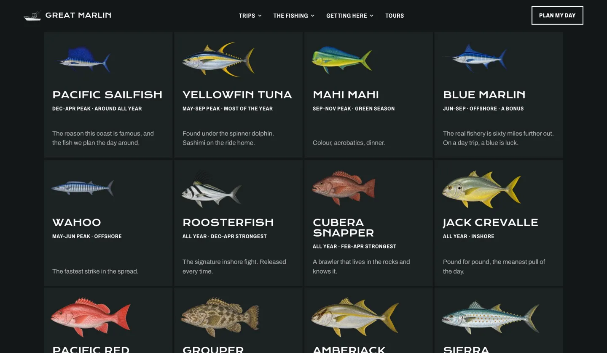
Twelve species, from Pacific sailfish to cubera snapper, each with its peak season and where it's found. Billfish released, meat fish kept, explained in plain words with real catch photos from this boat.
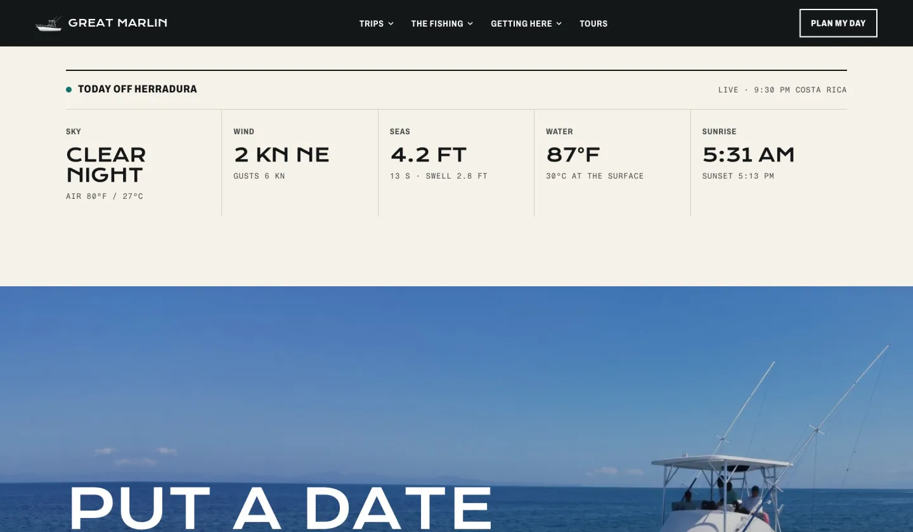
Sky, wind, seas and swell, water temperature, sunrise and sunset, updated on their own. Guests check the water before they book, and come back the night before to check it again.
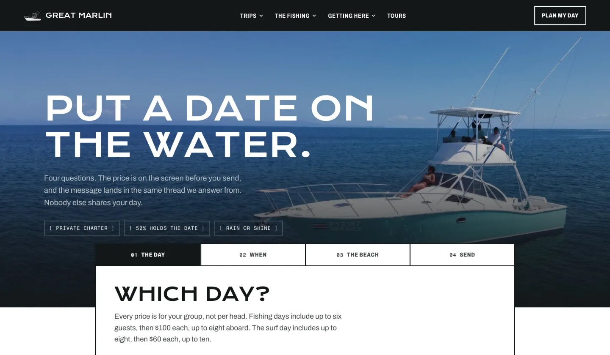
Four questions: the day, when, the beach, send. The price is on screen before they hit send, and they can add several days in one request. Every request lands in the Great Marlin inbox and the guest gets a confirmation from bookings@greatmarlin.com.
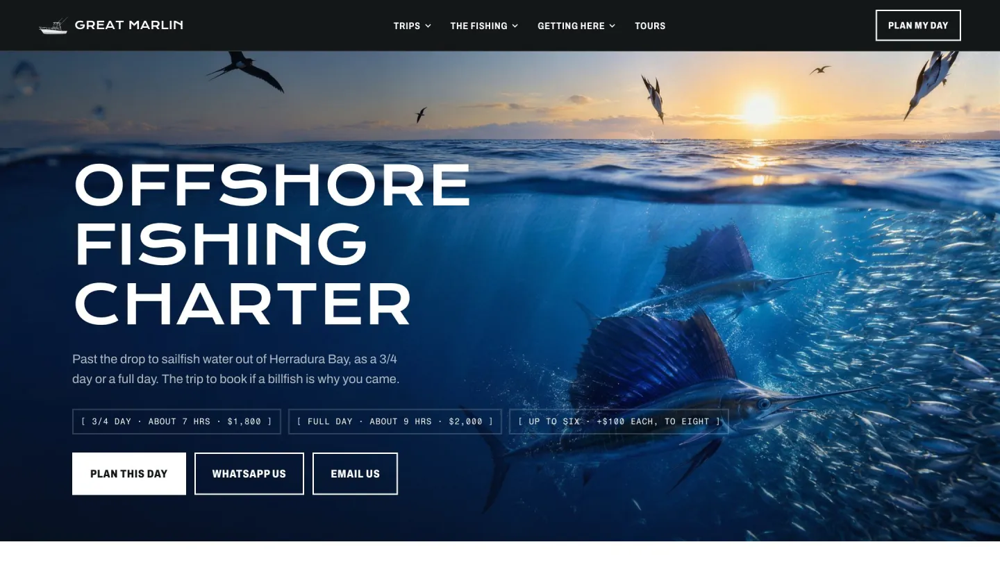
Offshore, inshore and the surf day each get their own page: what the day looks like, what's included, who it's for, and a plan button, written for the people searching for exactly that trip.
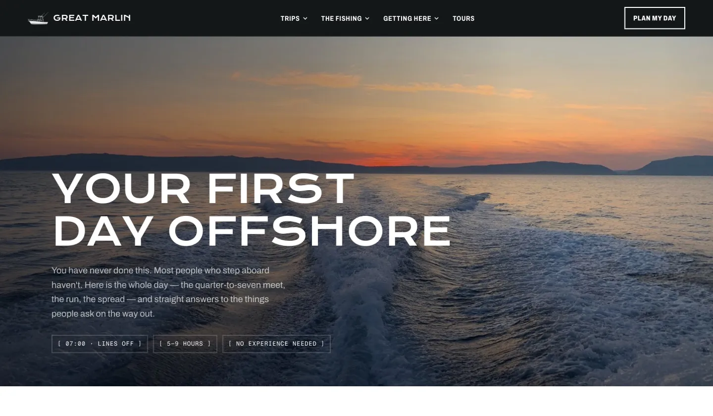
A first-day-offshore guide that walks through the whole day, and a guide to fishing Costa Rica's central Pacific: the seasons, the fish, the method. Pages that answer the nervous questions before anyone has to ask.
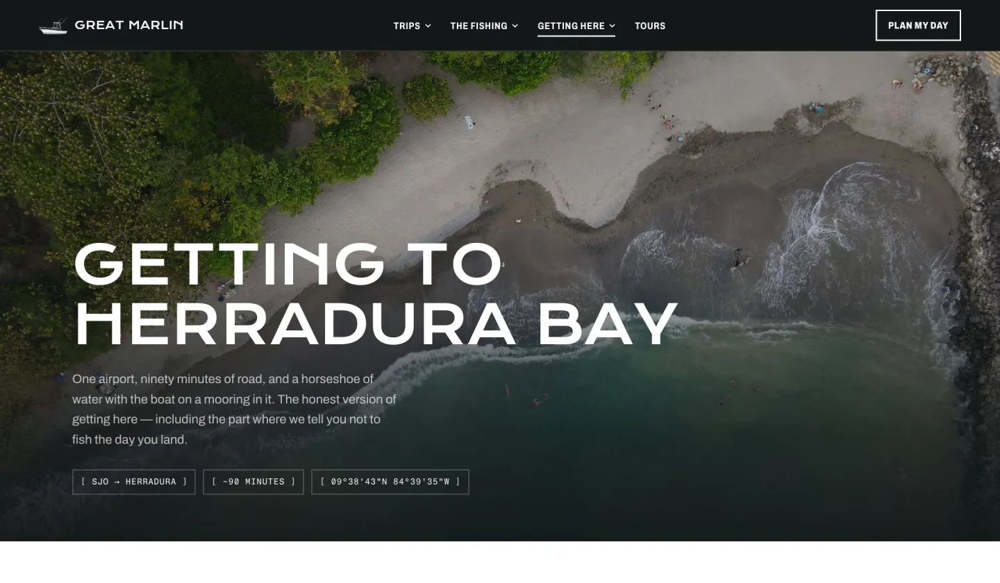
How to get to Herradura Bay, rides from hotels and the airport through Jaco Transport, and tours for the days you're not fishing: waterfalls, rainforest, the coast.
Every page was tested on real iPhone screens, down to the small ones. On the smallest phones the menu trims to just the logo, the video swaps to a lighter file, and a tap wakes it up if the phone is in Low Power Mode.
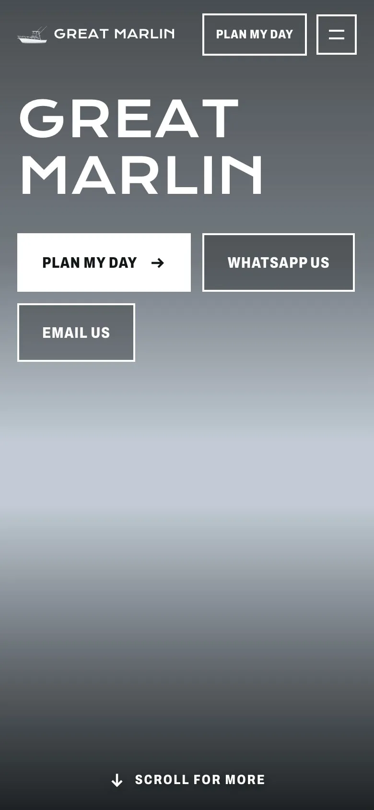
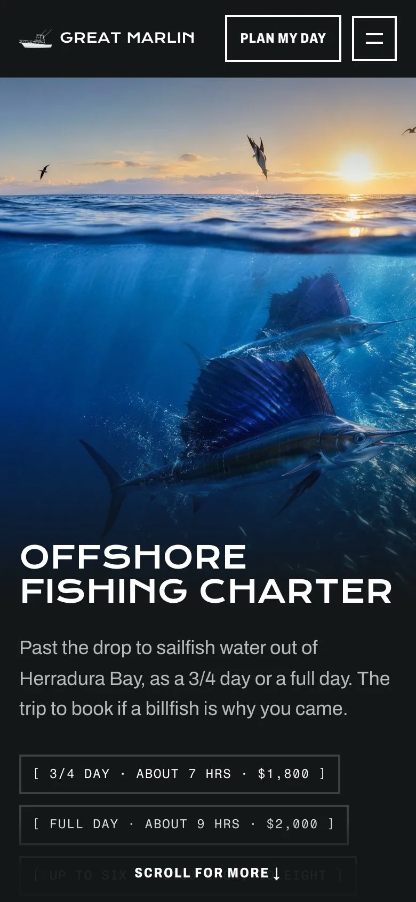
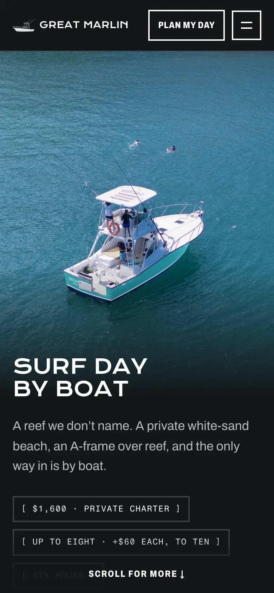
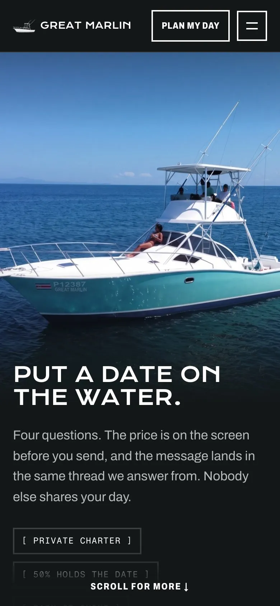
A site this visual has to stay fast and reliable, or the boat never gets booked.
Every request sends the guest a confirmation and lands in the same email thread the crew answers from. Nothing gets lost.
The sea, wind and water readouts refresh on their own. Nobody has to touch the site for them to be right.
Videos only play while they're on screen, and phones get a smaller file, so the site stays smooth on a beach signal.
Every trip has a WhatsApp button with the question already typed, so asking takes one tap.
Styles and scripts are stamped with each update, so nobody sees an old layout after a change.
Separate pages for each trip and each question, a sitemap, and every old address pointing to the new site.
I studied how the top yacht builders present their boats and wrote down the rules that make a site feel expensive.
The 360° boat, the live conditions, the trips, the fish guide and the planner, page by page.
Booking emails tested end to end, every page checked on real iPhone screens, a private test link first.
Switched greatmarlin.com over with the old site saved, so going back would take one step.
Send me your business and I'll show you what your new site could be. Free, no pressure, in English or Spanish.